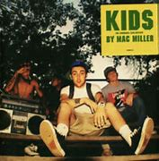

K.I.D.S
Mac Miller
Label: Rostrum Records
Released: Aug 13, 2010
Country: US
Style: Hip-Hop
Tracklist:
A1 Kickin' Incredibly Dope Shit (Intro) 3:45A2 Outside 3:37
A3 Get Em Up 3:18
A4 Nikes On My Feet 2:44
A5 Senior Skip Day 2:56
B1 The Spins 3:16
B2 Don't Mind If I Do 2:18
B3 Paper Route 3:00
B4 Good Evening 3:55
B5 Ride Around 2:24
C1 Knock Knock 3:18
C2 Mad Flava, Heavy Flow (Interlude) 0:27
C3 Kool Aid & Frozen Pizza 2:38
C4 All I Want Is You 3:43
C5 Poppy 2:53
C6 Face In The Crowd 3:29